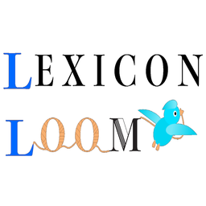

学習 / 知識整理
Lexicon Loom
キーワードと内容を登録して、自分だけの辞書・知識帳を作るアプリ。
あなた自身の知識を織り成すパーソナル辞書。キーワードと内容をセットにしたアイテムを、最大3階層のカテゴリで整理できます。英会話・レシピ・お店・ネタ帳など好きなテーマの辞書から、暗記カードやチェックリストまで、ひとつのアプリでまとめられます。登録データは端末内に保存され、開発者サーバーやクラウドへの送信・同期は行いません。ただし、Google 検索・Wikipedia・ChatGPT で外部検索するとキーワードが各サービスへ送信され、アプリ内ブラウザでは閲覧先のサイトと通信します。
- キーワード＋内容でアイテムを登録、最大3階層のカテゴリで整理
- 通常・チェックリスト・カウンター・クイズのカテゴリタイプ
- アプリ内ブラウザ・CSV一括入力ですばやく取り込み
- バックアップと機種変更時のデータ移行